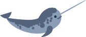

Нарвал
Також відомий як єдиноріг. Мешкають в холодний арктичних водах. Цікаво що ріг нарвала насправді зовсім не ріг, це видозмінений передній зуб. Він порожнистий і важить близько 10 кг. Нарвали одні з найбільш уразливих до змін клімату та забруднення довкілля. Крім того зараз для полювання на нарвалів ескімоси використовують моторні човни і автоматичні гарпуни.